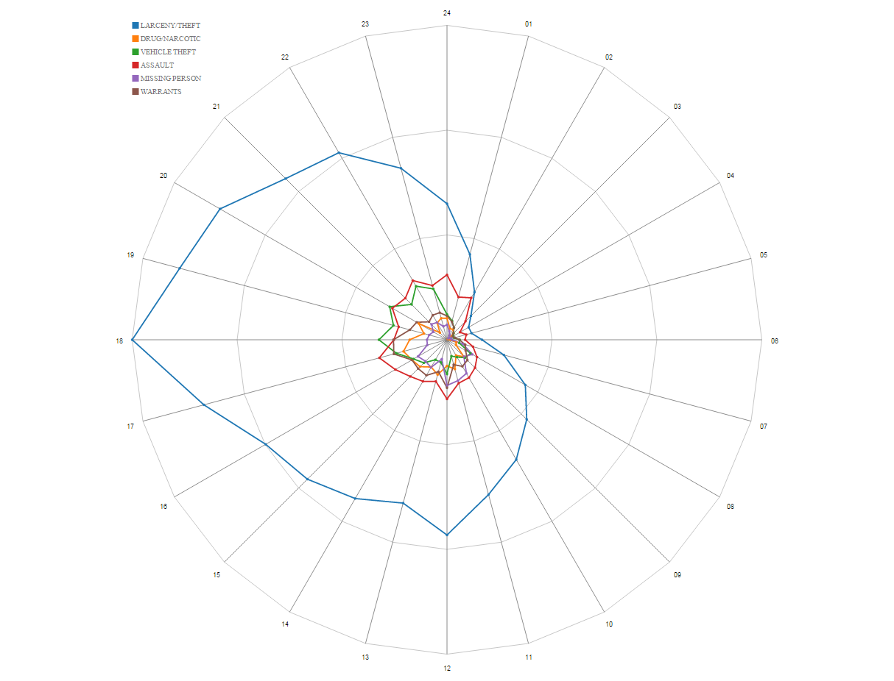
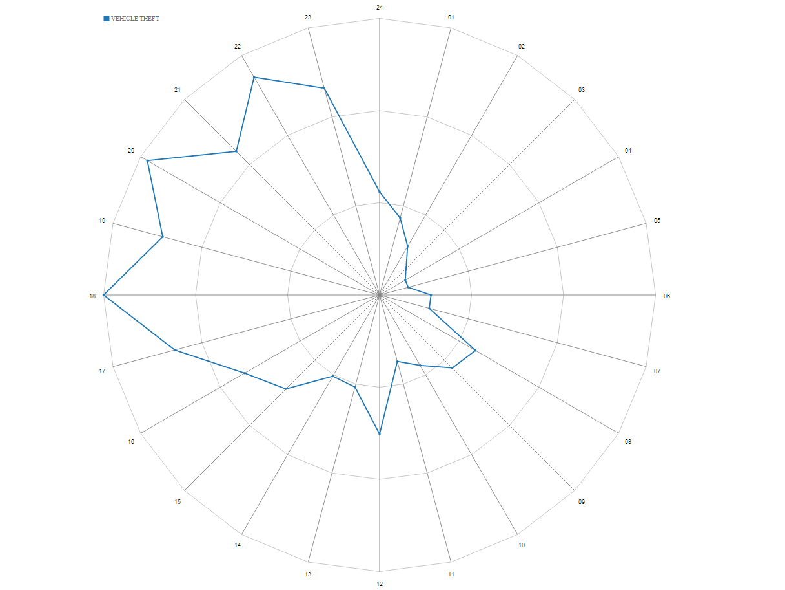
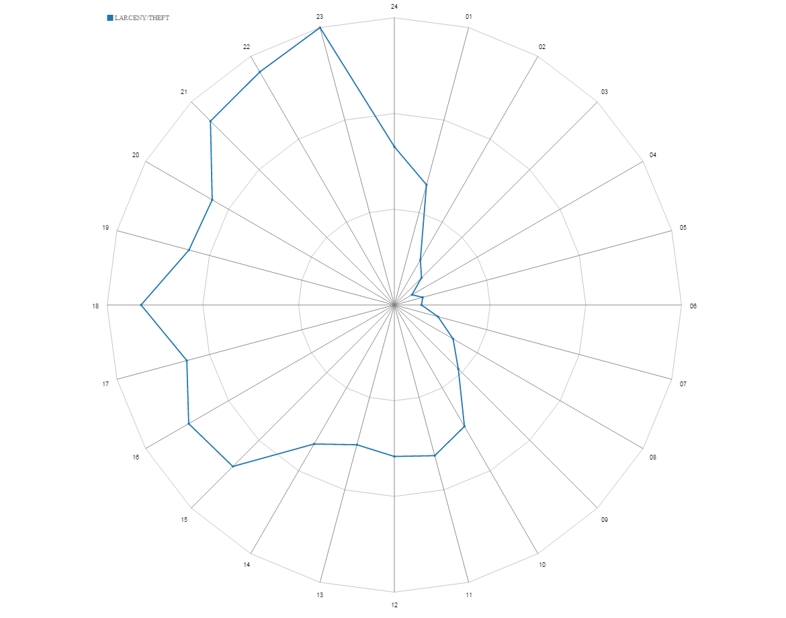

SF Incidents frequency analysis.
Main goal of this submision is to identify how do incidents vary by time of day. To reduce number of data lets identify most frequent incidents.
1. Incedents count per categories
See live example (it takes a while to render).
As we can see most frequent insidents are:
- LARCENY/THEFT
- ASSAULT
- VEHICLE THEFT
- WARRANTS
- DRUG/NARCOTIC
- MISSING PERSON
MISSING PERSON is the last because the gap between it and next category is huge.
Lets consider how vary incidents between months, days of the week and time of a day
2. Incedents count per month
See live example (it takes a while to render).
It is notisible that LARCENY/THEFT count is rising from June to August.
3. Incedents count per days of the week

See live example (it takes a while to render).
It is notisible that LARCENY/THEFT happens more frequently on Saturday and ASSAULT on Saturday and Sunday.
4. Incedents count per time of a day
See live example (it takes a while to render).
It is notisible that LARCENY/THEFT happens more frequently at 6 PM. Also we can see that there are very few incidents between 3 - 5 AM.
Another interesting thing here is chart of the VEHICLE THEFT category. Lets consider it in details.
5. VEHICLE THEFT per time of a day
See live example (it takes a while to render).
We can interpret it as: "Most cars are theft while people are at home at the evening"
6. LARCENY/THEFT per time of a day on Saturday
Because we found that LARCENY/THEFT happens mostly on Saturday lets consider it in details
See live example (it takes a while to render).
Most LARCENY/THEFT incidents on Saturday happens mostly between 9 and 12 PM
Summary
- There are very few incidents between 3 - 5 AM.
- Most LARCENY/THEFT incidents happens most often on Saturday between 9 and 12 PM
- Most cars are theft while people are at home at the evening
Sourse code available in public GitHub repo